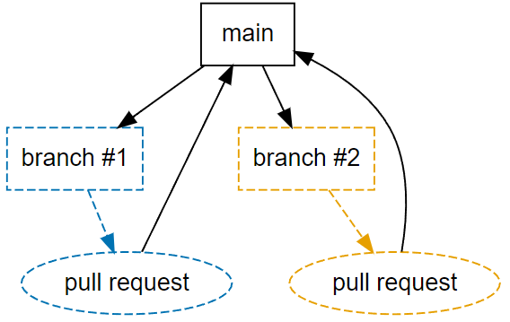
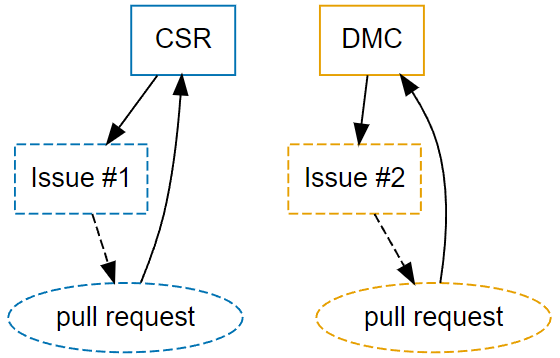
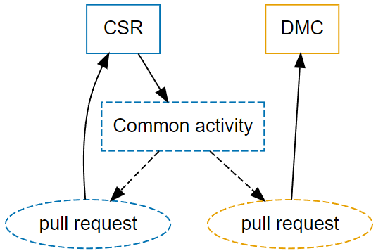

Branching Strategies
Defining a branching strategy can be tricky and requires to identify the needs of each repository. While there is no best branching strategies, this part provides a few examples of what could be considered as potential branching strategies.
There is no need to define one single branching strategy for all of the repository of a company or institution. The choice should be made by type of activity.
[alex:] I assume the concept of branch, when and how to use its is defined in another part of the white paper.
Basic git structure
The basic structure of a git repository relies on a principal branch called main, which will be duplicated in sub-branches that will in the end merged back to the main branch through a pull request.

This branching strategy can be used in the case of a team working on a specific activity of a single clinical study within a repository.
It could potentially be used for a study or a product with several distinct activities using flags (see Branch locking and flagging).
One main branch per activity
A single study often needs to deal with different activities, sometime happening at the same moment. One potential way to use git in theses cases could be to have:
1 repository for the study
1 main branch per activity (CSR, DMC #n, DSUR, etc)
This branching strategy would allow to work separately on each activity, keeping them intact, but also to work on both at the same moment if needed. The following examples shows a repository dedicated to a single study with the 2 following main branches:
CSR: for daily ongoing activities related to the CSR preparation
DMC #1: specific milestone happening soon
Two issues are handled at the same moment. Issue #1 is dedicated to an efficacy endpoint that should not be part of the DMC, while Issue #2 is stricly dedicated to the DMC activity and will not be part of the final CSR outputs.

Common issue
If something common to more than one of the main branches should be made, it is possible to make as much pull requests as requested. The only tricky part is to define the source branch. In this example, we take the CSR.

Branch locking and flagging
Work in progress.